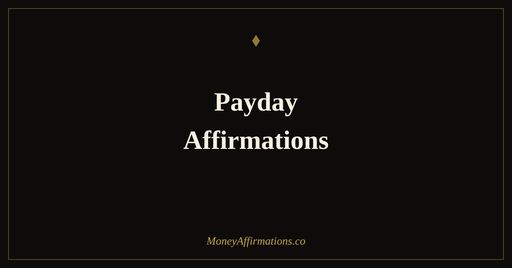

50 Payday Affirmations for Receiving Money With Gratitude and Intention

Payday arrives and most of us do one of two things: we feel a quick hit of relief, then immediately start mentally spending it — or we feel the number isn't enough, and the relief never comes at all. Neither response honours the moment. Payday is the one time money is moving toward you with your full attention on it, and how you receive it shapes your entire relationship with earning and wealth over time.
These 50 affirmations are organized around five specific payday actions — not generic feelings, but the actual moments: when the deposit lands, when you move money to savings, when you spend consciously, when you invest, and when you give. Each group is short enough to use in real time. Think of payday as a brief ceremony rather than just a notification, and these affirmations as the words that make it sacred.
What are payday affirmations?
Payday affirmations are intentional statements you use at the moment money arrives to shift from passive receipt to conscious, grateful receiving. Where general money affirmations are used daily to build a wealth mindset over time, payday affirmations are situational — they work precisely because they're anchored to a real, emotionally charged event.
The act of receiving money activates strong psychological responses: relief, anxiety, guilt, or the immediate urge to spend. Affirmations used in this window interrupt the automatic emotional reaction and replace it with an intentional one. Over time, this changes your emotional baseline around earning — payday stops being a brief hit of dopamine followed by stress, and becomes a regular touchpoint for gratitude, purpose, and financial confidence.
50 payday affirmations for receiving money
Use these at the exact moment described in each heading — payday is a ceremony, not just a notification. Each group is anchored to a specific action so the affirmation lands in real experience.
When you see the deposit arrive (1–10)
- I receive this money with a full and open heart.
- I am grateful for every dollar that flows into my account today.
- This deposit is proof that I am compensated for my energy and effort.
- I acknowledge this moment — money has arrived, and I welcome it with joy.
- I receive abundantly and I deserve every cent of what I earn.
- My income is a reflection of the value I consistently bring to the world.
- I notice this moment and I am thankful for it, whatever the number.
- Money flows to me reliably and I trust this pattern to continue.
- I am a capable earner and this deposit is evidence of that truth.
- I hold this moment of receiving with intention before I do anything else.
When you pay yourself first (11–20)
- I invest in my future self before I spend on anything else today.
- Saving is the most loving act I can do for the person I am becoming.
- I honor my future by setting aside a portion of what I receive right now.
- I am worthy of financial security and I act on that belief with every paycheck.
- Paying myself first is not a restriction — it is a declaration of self-respect.
- This transfer to savings is me saying: my future matters as much as my present.
- I move money into savings easily, confidently, and without guilt.
- Every dollar I keep for myself today is a seed growing into financial freedom.
- I have enough to live well now and still build wealth for later.
- I am the kind of person who pays themselves first, and that changes everything.
When you spend money intentionally (21–30)
- I spend my money in ways that align with who I truly am and what I value.
- Every purchase I make today is a conscious, deliberate choice — not a reaction.
- I release money freely for things that genuinely serve my life and wellbeing.
- Intentional spending is how I honor both my present needs and my financial goals.
- I am a thoughtful steward of money and my decisions reflect that care.
- I choose quality over impulse and satisfaction over distraction with my spending.
- Each time I spend with intention, I deepen my trust in my own financial judgment.
- I know the difference between what I want and what I need, and I honor both wisely.
- Spending money on what truly matters to me feels grounded and good.
- I am building a spending life that reflects my values, not my anxiety.
When you save or invest (31–40)
- Every dollar I invest today is working for me even while I sleep.
- I trust that saving consistently now creates the freedom I want later.
- My wealth grows because I show up for it regularly, not just when it's easy.
- I am building something real and lasting with every contribution I make.
- Compound growth is on my side and I give it time to work.
- I invest in my future with the same confidence I invest in my present.
- My savings account is proof that I manage money with skill and intention.
- I am patient with wealth-building because I know consistent action beats urgency.
- Every deposit into savings today is my future self saying thank you.
- I am proud of how I handle the money I receive, and I keep getting better at it.
When you give, tip, or share (41–50)
- Money flows through me generously and returns to me multiplied.
- Giving is proof that I live in abundance, not fear.
- I tip generously because I believe in the circulation of wealth.
- When I give freely, I signal to myself and the world that there is always enough.
- Generosity is one of my greatest financial strengths.
- Every time I share money with others, I strengthen my relationship with abundance.
- I contribute to the financial wellbeing of others without resentment or hesitation.
- Giving feels as natural as receiving because money was meant to move.
- I am part of a generous, abundant flow and I participate in it with joy.
- My willingness to give freely is one of the reasons money keeps finding its way back to me.
How to use these affirmations
The key to payday affirmations is timing. Unlike morning affirmations that build a general mindset, these are most powerful when used at the specific moment they describe. On payday, before you open your banking app, take one slow breath and read or say the first group — then open the app. Let the number land. Say the affirmations again if needed.
As you move through your payday actions — transferring to savings, paying bills, planning spending — move through the relevant groups. This doesn't need to take more than five minutes total. The ritual matters more than the duration.
If payday brings stress rather than gratitude, start with just group one. Read through those ten affirmations before you do anything with the money. Over several paychecks, notice whether the anxiety shifts. Many people find that affirmations rooted in the idea that money flows naturally toward them — not only on payday but consistently — help reduce the "I need to protect this" panic that often follows income receipt.
You can also write your favourite affirmation from each group on a sticky note near your desk or save them as your phone wallpaper for pay week. Repetition at the moment of action is what turns intention into habit.
Payday psychology: why receiving money triggers anxiety (and how gratitude rewires it)
If payday consistently brings more anxiety than joy, you are not alone and you are not failing — you are experiencing well-documented psychological patterns around income receipt.
The first is hedonic adaptation: the brain's tendency to normalize new circumstances quickly. Research by Brickman and Campbell showed that people return to a stable emotional baseline within months of major positive changes, including income increases. This is why a raise feels exciting for a few weeks, then ordinary. Payday, repeated every two weeks, loses its emotional charge and can even become a source of stress rather than satisfaction.
The second is the arrival fallacy — psychologist Tal Ben-Shahar's term for the belief that reaching a financial milestone will produce lasting happiness. "When I make $X, I'll feel secure." But the feeling rarely arrives at the milestone, because the brain has already adapted and reset the target higher. This creates a treadmill effect where income never feels like enough.
The third factor is dopamine dynamics. The brain releases more dopamine in anticipation of a reward than at the moment of receipt. Payday's deposit notification generates less reward-circuit activity than the expectation that built up before it — which is why it can feel anticlimactic.
Gratitude affirmations directly counter all three patterns. Research by Robert Emmons and Michael McCullough found that deliberate gratitude practices — writing down what you have received and why it matters — measurably increase financial satisfaction independent of income level. Gratitude interrupts hedonic adaptation by forcing conscious attention onto what arrived. It dissolves the arrival fallacy by making the present moment the focus rather than the next threshold. And it activates a different neural pathway than dopamine anticipation — one associated with social bonding and sufficiency rather than wanting and lack.
In practical terms: pausing to consciously receive your paycheck with language of gratitude and intention changes how the experience registers in memory — and memory shapes future emotional responses. The ceremony, practiced consistently, trains your brain to associate payday with wellbeing rather than anxiety.
Tips to make them work faster
- Anchor them to action: Don't say affirmations in the abstract — say them at the precise moment they describe. Open your banking app, see the deposit, then speak the words. The emotional charge of the real event makes the affirmation land far more deeply.
- Write one down: After your payday ritual, write the single affirmation that felt most true or most needed that day. This writing step consolidates the belief in a way that silent repetition alone does not.
- Use your voice: Speaking affirmations aloud — even quietly — activates auditory processing and physical breath alongside the cognitive statement. This multi-sensory engagement increases the practice's effectiveness compared to reading silently.
- Repeat across three paydays: Psychological research on habit formation suggests that three consistent repetitions of a new response to a trigger begin to form an automatic association. Give the practice at least three pay cycles before judging its effect.
- Pair with a single physical act: Place your hand on your heart when you say the receiving affirmations. This somatic anchor links the emotional state of gratitude to a physical cue, making it easier to access that state outside of payday when financial anxiety arises.
Frequently asked questions
Should I say payday affirmations before or after I receive my money?
Both have value, but after is more powerful for most people. Saying affirmations at the exact moment you see the deposit — while the emotion is live — creates a stronger neurological anchor than saying them in anticipation. That said, using a brief morning affirmation on payday before you check your account primes your nervous system to receive the money with openness rather than anxiety. Try a 30-second practice before you look, then pause and affirm again the moment you see the amount.
What if my payday feels too small to be grateful for?
This is one of the most important moments to practice gratitude affirmations. Research on gratitude by Emmons and McCullough found that people who deliberately noticed small positive events — not just big windfalls — showed the greatest improvements in wellbeing and financial satisfaction. A paycheck that feels inadequate is still proof that money is moving toward you. Acknowledge what is, while holding space for what is growing. The affirmations in the "When you see the deposit arrive" group are written specifically for this.
Can payday affirmations help me stop lifestyle inflation?
Yes — particularly the groups focused on paying yourself first and spending intentionally. Lifestyle inflation happens on autopilot: income rises, spending expands to match, and satisfaction stays flat. Affirmations interrupt that automatic response by pausing you at the moment of receipt and redirecting your attention to values and future self before the money disperses. The "When you pay yourself first" group specifically targets this window. Use those affirmations the moment money arrives, before any spending decisions, to reinforce the habit of saving as a priority rather than an afterthought.
These affirmations are most effective as part of a consistent money mindset practice. If you want to build on this work, explore the full money affirmations collection for daily statements that keep your financial confidence strong between paydays.